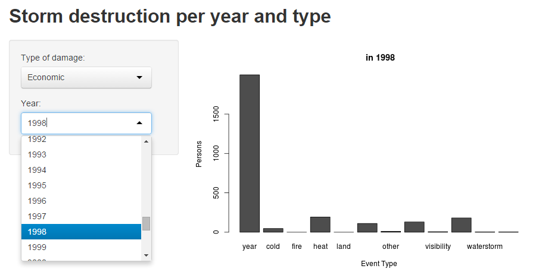

This is my Slidify presentation for a Storm Destruction analysis app I wrote in Shiny. The app was written as a submission for the 'Developing Data Products' Course Project of the so-titled Coursera course, made by John Hopkins University.
Hendrik D'Oosterlinck
Computational Scientist
This is my Slidify presentation for a Storm Destruction analysis app I wrote in Shiny. The app was written as a submission for the 'Developing Data Products' Course Project of the so-titled Coursera course, made by John Hopkins University.
The data was taken from the NOAA Storm Database. The database tracks characteristics of major storms and weather events in the United States, including when and where they occur, as well as estimates of any fatalities, injuries, and property damage.
Building further upon my project submission for 'Reproducible Research' the data is aggregated, event types are grouped, and an interactive bar graph showing damage of a type and year (given by user input) is produced.
total_economicdamage_peryear <- read.csv("total_economicdamage_peryear.csv", sep=",", header=T)
total_fatalities_peryear <- read.csv("total_fatalities_peryear.csv", sep=",", header=T)
total_injuries_peryear <- read.csv("total_injuries_peryear.csv", sep=",", header=T)
#setting the data straight
damageyear <- merge(total_economicdamage_peryear[,-1],total_fatalities_peryear[,-1],by=(c("year","event_class")))
damageyear <- merge(damageyear,total_injuries_peryear[,-1],by=(c("year","event_class")))
colnames(damageyear) <- c("year","event_class","eco","fat","injuries")
evtypes <<- sort(unique(damageyear$event_class))
The data was written into three csv files which were read in and melted using dcast from the package 'melt', with melted values being the economic damage, injuries or casulties resulting from weather events.
